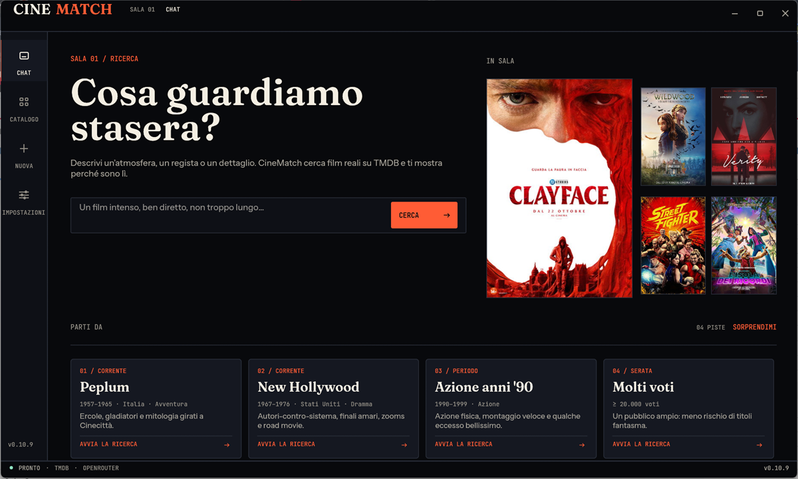
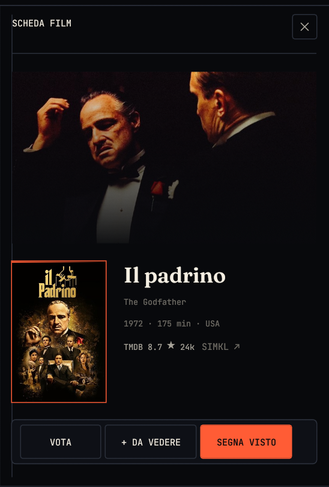
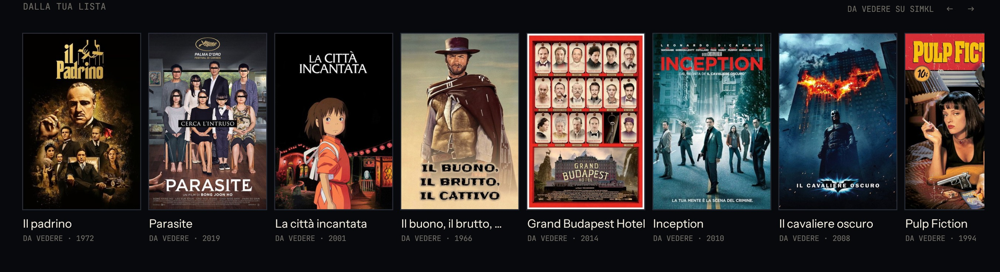

CINEMATCH · WINDOWS 10/11
Il film giusto,
senza perdere
la serata.
Scrivi cosa vuoi vedere. CineMatch interpreta la richiesta, cerca su TMDB e ti mostra fino a cinque film reali con il perché. Oppure esplora il catalogo con i filtri. Collega SIMKL e ritrovi visti, lista e voti.
Serve una chiave TMDB gratuita (2 minuti) al primo avvio. AI e SIMKL sono opzionali.
Installer per-utente · solo PC Windows 10/11 · ~6 MB · v0.10.5
Prima di installare
- Installazione per-utente: nessun permesso di amministratore.
- Solo Windows 10/11 a 64 bit. Non esiste per macOS, Linux o telefono.
- L’installer non è firmato digitalmente: Windows può mostrare “Windows protected your PC”. Se il file corrisponde allo SHA-256 della release, puoi scegliere “Ulteriori informazioni” → “Esegui comunque”.
- Per disinstallare: Impostazioni → App → CineMatch. Configurazione e cache restano in
%APPDATA%\CineMatchfinché non le rimuovi.

Come si usa
-
01
Scrivi la serata
Un’atmosfera, un regista, un dettaglio. Oppure parti da uno dei quattro spunti locali.
-
02
Scegli e leggi
Ogni film arriva con il perché e un consiglio. Apri la scheda per cast, disponibilità e simili.
-
03
Affina
Passa alla griglia, accendi i filtri o applica una corrente dalla guida. Il contesto resta.
Come funziona
-
INTERPRETE
Le regole funzionano offline. Se vuoi, DeepSeek, OpenRouter o Ollama leggono la frase e propongono i criteri.
-
TMDB REALE
I film arrivano da TMDB (chiave gratuita, richiesta al primo avvio). Il motore di vincoli scarta le combinazioni impossibili: nessun titolo inventato.
-
GRIGLIA
Ordina per popolarità, voto, voti, ultime uscite o prossimamente. “Più recenti” esclude le date future, i corti sotto i 60 minuti, i titoli senza poster e quelli con meno di 50 voti. “Prossimamente” parte da oggi, ordina per popolarità e nasconde le schede senza poster.
-
SBLOCCA
Con pochi risultati l'app mostra i tre compromessi più piccoli: un solo vincolo tolto, quanti film sblocca e due anteprime nuove. Un clic e la griglia riparte; le rinunce che non aggiungono film restano fuori.
-
SUL TUO PC
Chiavi, configurazione e cache restano in locale. L'aggiornamento viene verificato con SHA-256.
-
IMDB
I voti IMDb arrivano dai dati pubblici, senza chiave: nella scheda stanno accanto al voto TMDB.
SIMKL
Quello che guardi, già segnato.
Collega l'account SIMKL e ritrovi visti, lista e voti dentro CineMatch. La scheda film diventa il punto unico: segna, aggiungi, vota, riprendi.
Token nel Windows Credential Manager · sincronizzazione incrementale · nessun polling.

-
VISTO E DA VEDERE
Segna un film come visto o mettilo in “Da vedere” dalla scheda. Lo stato arriva da SIMKL e resta allineato.
-
VOTO 1–10
La stessa ghiera della scheda scrive il voto su SIMKL. “Rimuovi” cancella stato e voto, come da API.
-
RIPRENDI
Se lasci un film a metà in un'altra app, la home mostra la percentuale e il punto da cui ripartire.
-
DALLA TUA LISTA
I film “Da vedere” compaiono sotto la chat: un clic e apri la scheda.
Novità recenti: primo avvio guidato con verifica della chiave TMDB, scheda film che conserva il perché e il consiglio, errori di rete e SIMKL visibili con Riprova, contrasto e accessibilità migliorati, chiavi API nel Credential Manager, configurazione con backup, filtri più coerenti e composer della chat sempre pronto. “Più recenti” mostra solo film già usciti e nasconde corti e schede vuote; “Prossimamente” ordina i film futuri per popolarità, senza schede senza poster; con pochi risultati la striscia “Sblocca” mostra il compromesso più piccolo. Tutte le versioni ↗

PRONTO?